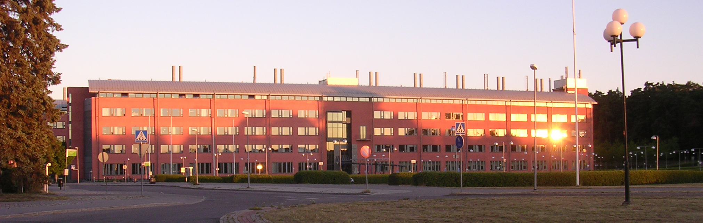

The next Astronomdagarna will be held in Uppsala at Ångström laboratory, from Thursday-Saturday 22-24 October 2015. It will be organized by the Division of Astronomy and Space Physics within the Department of Physics and Astronomy at Uppsala University. Registration and proposals for contributions will open in April.
Astronomdagarna is a scientific meeting held every two years, bringing together astronomers from different Swedish institutes and others interested in astronomy, in an atmosphere designed to promote scientific exchange. The meeting consists mostly of presentations of recent results and ongoing projects, through talks and posters. The meeting will be held in English. There will also be a talk for the general public, usually in Swedish.
ÅNGSTRÖMLABORATORIET 
Ångströmlaboratoriet. © foto: Roland Grönroos
Ångströmlaboratoriet at Uppsala University is home to the Division of Astronomy and Space Physics. The meeting will take place in the lecture hall Polhemsalen, located on ground floor of Ångströmlaboratoriet. The public lecture held on Thursday evening will be given in Siegbahnsalen, also located on ground floor. To reach Ångströmlaboratoriet, you can take the bus from Uppsala Centralstation, to the bus stop Polacksbacken. Buses 1, 12, 20, 101 take approximately 10 minutes. You can find timetables and plan your trip via the UL website . Note, it is more expensive to buy tickets on the bus, and drivers do not accept cash (card only). It is preferrable to buy tickets beforehand at the train station, either at the UL travel center, or at Pressbyrån. A walk from Uppsala Centralstation takes 30 minutes, and passes through Uppsala city park.
The meeting will start at 14:00 on Thursday the 22nd and end at lunch time on Saturday the 24th. There will be a public lecture on Thursday evening, and a dinner is planned for Friday evening. Some excursions to nearby points of interest are planned for the Saturday afternoon.
Uppsala has a broad range of accommodation, that you can find for example through tripadvisor or through Uppsala tourist office via destinationuppsala
▪ Paul Barklem
▪ Alexis Lavail
▪ Paul Barklem ▪ Alexis Lavail ▪ and everybody at Uppsala astro-division
▪ Paul Barklem (Uppsala) ▪ Anders Johansen (Lund) ▪ Dan Kiselman (SAS/Stockholm) ▪ Gabriella Stenberg (IRF) ▪ Eva Wirström (Chalmers) ▪ Erik Zackrisson (Stockholm/Uppsala)